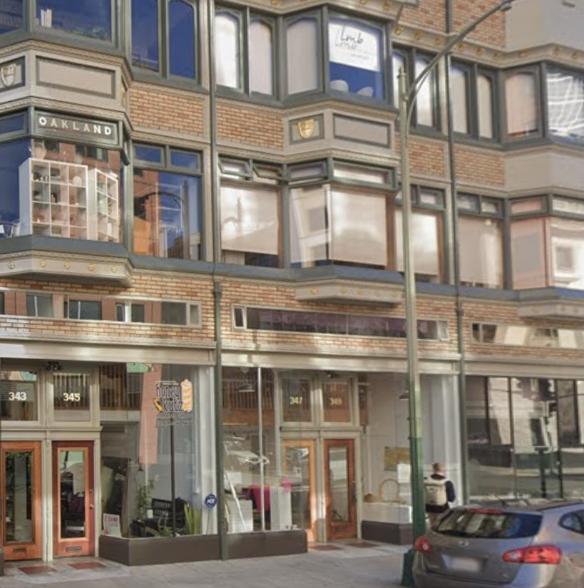

Dream Farm Commons is located on 15th Street, a one way street between Harrison and Webster.
Metered street parking is available, Mon-Saturday. Parking is free after 6PM + on Sunday.
Public transit includes; 19th Street Bart (0.3 mi), 12th Street Bart (0.2 mi), NL AC Transit bus, 62 AC Transit bus, and 51A AC Transit bus.
The main gallery has stepfree access, however, the Gallery's sister Annex has one step.
Both sites have floor to ceiling windows to the street.
Restrooms are in the basement via stairs and elevator, three doors down from the Galley. The code is provided on site.
Please get in touch by email if you have access requirements we can help with.
